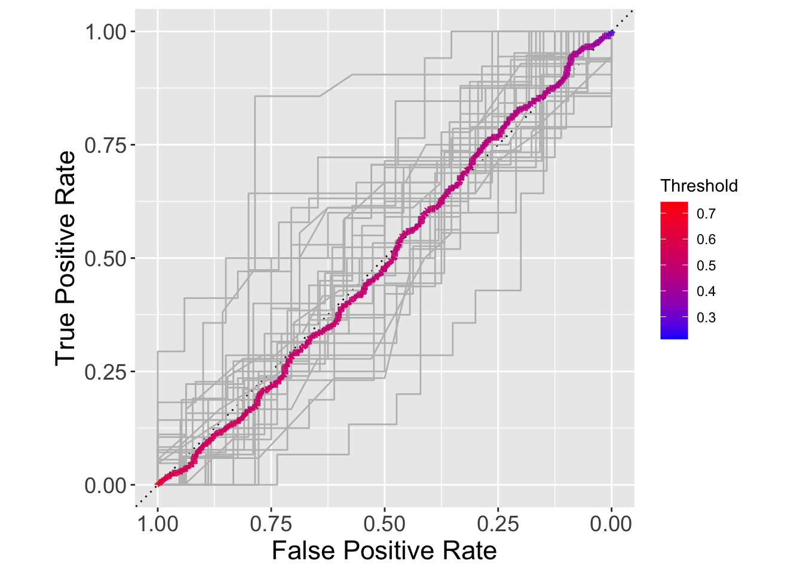
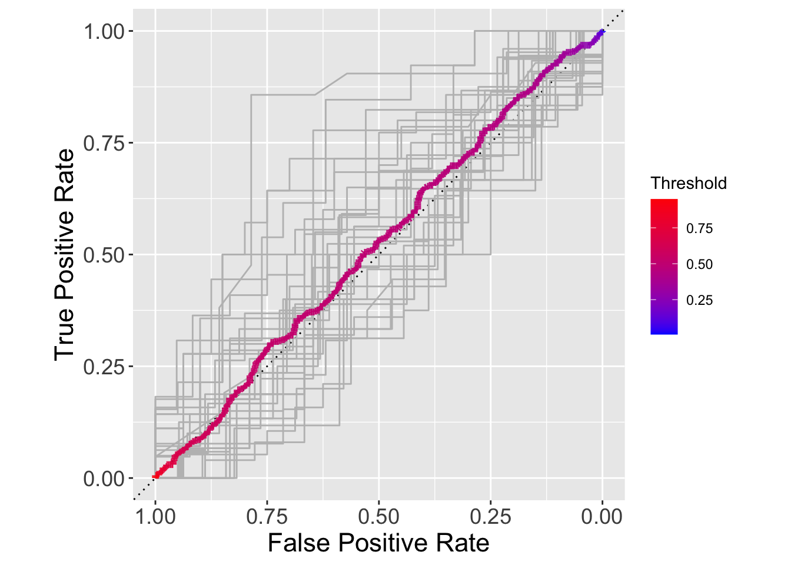

library(tidyverse)
library(tidymodels)Analysis Workflow Step 3: Fit & evaluate models in outer loop
Setup
Load libraries
Source functions file
source("fun_moodivate.R")This functions file (fun_moodivate.R) contains many functions that are used throughout the Moodivate project analysis scripts. Functions split data, fit and evaluate models, and provide helper functionality for the modeling process. See all annotated code building functions within fun_moodivate.R.
Read in average metrics
Metrics averaged across inner folds (10 folds per average) for each unique model configuration (combination of feature set and two hyperparameters) for each outer fold (30 splits).
metrics_avg <- read_csv(
"~/Desktop/internship/moodivate/metrics_inner_avg.csv",
show_col_types = FALSE)Select best configurations
We select the best model configuration for each outer fold for each feature set. Specifically, these are the model configurations that produce the highest average performance across validation sets (held-out inner folds) in each outer fold for each feature set.
configs_best <- metrics_avg |>
group_by(feature_set, outer_split_num) |>
arrange(desc(roc_auc)) |>
slice(1) |>
ungroup()
configs_best |> print(n = Inf)# A tibble: 90 × 11
n_jobs outer_split_num feature_set hp1 hp2 accuracy roc_auc sens
<dbl> <dbl> <chr> <dbl> <dbl> <dbl> <dbl> <dbl>
1 10 1 thru_wk2 0.1 0.801 0.533 0.552 0.333
2 10 2 thru_wk2 1 0.0868 0.525 0.567 0.267
3 10 3 thru_wk2 0.4 0.130 0.508 0.577 0.267
4 10 4 thru_wk2 0.4 0.0641 0.557 0.571 0.533
5 10 5 thru_wk2 0.4 0.00850 0.516 0.581 0.467
6 10 6 thru_wk2 0.1 0.130 0.435 0.496 0.3
7 10 7 thru_wk2 0.4 0.159 0.468 0.527 0.267
8 10 8 thru_wk2 0 1.62 0.541 0.576 0.5
9 10 9 thru_wk2 0 7.39 0.541 0.553 0.4
10 10 10 thru_wk2 0 6.68 0.508 0.554 0.467
11 10 11 thru_wk2 0.1 0.535 0.532 0.549 0.4
12 10 12 thru_wk2 0 7.39 0.541 0.585 0.467
13 10 13 thru_wk2 0 1.33 0.517 0.573 0.433
14 10 14 thru_wk2 0 3.29 0.525 0.529 0.433
15 10 15 thru_wk2 0.9 0.0641 0.532 0.571 0.333
16 10 16 thru_wk2 0 7.39 0.541 0.55 0.333
17 10 17 thru_wk2 0.1 0.654 0.484 0.539 0.233
18 10 18 thru_wk2 0 2.20 0.532 0.533 0.5
19 10 19 thru_wk2 0 0.264 0.55 0.583 0.5
20 10 20 thru_wk2 0.8 0.0579 0.508 0.568 0.388
21 10 21 thru_wk2 0 7.39 0.5 0.568 0.433
22 10 22 thru_wk2 0.1 0.654 0.548 0.543 0.4
23 10 23 thru_wk2 0 0.264 0.532 0.574 0.5
24 10 24 thru_wk2 0 4.03 0.516 0.529 0.333
25 10 25 thru_wk2 0 0.801 0.532 0.523 0.467
26 10 26 thru_wk2 0.1 0.195 0.508 0.529 0.433
27 10 27 thru_wk2 0 2.98 0.548 0.567 0.433
28 10 28 thru_wk2 0.1 0.801 0.492 0.525 0.333
29 10 29 thru_wk2 0 1.47 0.524 0.517 0.467
30 10 30 thru_wk2 0.8 0.0524 0.508 0.543 0.467
31 10 1 thru_wk3 0.7 0.0172 0.508 0.583 0.433
32 10 2 thru_wk3 0.2 0.437 0.525 0.567 0.267
33 10 3 thru_wk3 0.3 0.176 0.508 0.577 0.267
34 10 4 thru_wk3 0.2 0.0350 0.565 0.611 0.533
35 10 5 thru_wk3 0 0.0286 0.532 0.621 0.6
36 10 6 thru_wk3 0 4.03 0.484 0.487 0.267
37 10 7 thru_wk3 1 0.00207 0.548 0.546 0.533
38 10 8 thru_wk3 0.3 0.00940 0.5 0.583 0.517
39 10 9 thru_wk3 0 0.0141 0.565 0.566 0.567
40 10 10 thru_wk3 0.2 0.0579 0.516 0.567 0.467
41 10 11 thru_wk3 1 0.0579 0.525 0.549 0.4
42 10 12 thru_wk3 0.1 0.724 0.525 0.585 0.433
43 10 13 thru_wk3 0 1.62 0.516 0.588 0.4
44 10 14 thru_wk3 0 0.0191 0.525 0.550 0.533
45 10 15 thru_wk3 0.4 0.144 0.541 0.571 0.333
46 10 16 thru_wk3 0.1 0.00169 0.565 0.590 0.6
47 10 17 thru_wk3 0.6 0.000335 0.532 0.571 0.467
48 10 18 thru_wk3 0.4 0.0233 0.541 0.530 0.4
49 10 19 thru_wk3 0.3 0.0473 0.508 0.570 0.433
50 10 20 thru_wk3 0.7 0.0641 0.5 0.568 0.388
51 10 21 thru_wk3 0 0.130 0.548 0.552 0.533
52 10 22 thru_wk3 0 0.801 0.525 0.559 0.467
53 10 23 thru_wk3 0.2 0.106 0.516 0.548 0.4
54 10 24 thru_wk3 0.5 0.00138 0.508 0.538 0.467
55 10 25 thru_wk3 0 0.980 0.516 0.535 0.433
56 10 26 thru_wk3 0.1 0.000454 0.517 0.55 0.533
57 10 27 thru_wk3 0 2.20 0.548 0.575 0.433
58 10 28 thru_wk3 0.2 0.00342 0.516 0.562 0.533
59 10 29 thru_wk3 0.8 0.00419 0.524 0.563 0.452
60 10 30 thru_wk3 0.6 0.0191 0.548 0.563 0.567
61 10 1 thru_wk4 0.1 0.238 0.533 0.571 0.4
62 10 2 thru_wk4 0.7 0.130 0.525 0.568 0.267
63 10 3 thru_wk4 0.1 0.654 0.508 0.574 0.267
64 10 4 thru_wk4 0 1.80 0.565 0.574 0.533
65 10 5 thru_wk4 0.4 0.0127 0.541 0.625 0.533
66 10 6 thru_wk4 0 4.46 0.452 0.506 0.267
67 10 7 thru_wk4 0 1.80 0.484 0.54 0.4
68 10 8 thru_wk4 0 7.39 0.532 0.571 0.483
69 10 9 thru_wk4 0.9 0.00280 0.541 0.554 0.533
70 10 10 thru_wk4 0.2 0.0784 0.524 0.55 0.5
71 10 11 thru_wk4 0.1 0.106 0.516 0.587 0.5
72 10 12 thru_wk4 0 1.62 0.516 0.588 0.433
73 10 13 thru_wk4 0 1.47 0.548 0.581 0.467
74 10 14 thru_wk4 0 0.0641 0.525 0.571 0.467
75 10 15 thru_wk4 0.1 0.535 0.516 0.571 0.333
76 10 16 thru_wk4 0.1 0.654 0.516 0.548 0.3
77 10 17 thru_wk4 0 0.176 0.468 0.565 0.433
78 10 18 thru_wk4 0.1 0.130 0.508 0.546 0.517
79 10 19 thru_wk4 0 6.68 0.508 0.569 0.4
80 10 20 thru_wk4 0.4 0.117 0.492 0.563 0.388
81 10 21 thru_wk4 0.1 0.0641 0.508 0.556 0.467
82 10 22 thru_wk4 0 0.886 0.509 0.565 0.5
83 10 23 thru_wk4 0 0.724 0.516 0.566 0.467
84 10 24 thru_wk4 0.9 0.0172 0.475 0.536 0.467
85 10 25 thru_wk4 0 1.33 0.524 0.545 0.5
86 10 26 thru_wk4 0 4.03 0.548 0.523 0.4
87 10 27 thru_wk4 0 1.33 0.581 0.6 0.467
88 10 28 thru_wk4 0.2 0.0387 0.524 0.553 0.467
89 10 29 thru_wk4 0 0.483 0.516 0.567 0.467
90 10 30 thru_wk4 1 0.0115 0.525 0.579 0.6
spec ppv npv
<dbl> <dbl> <dbl>
1 0.710 0.563 0.523
2 0.742 0.528 0.518
3 0.781 0.5 0.51
4 0.562 0.552 0.558
5 0.5 0.5 0.539
6 0.517 0.396 0.464
7 0.644 0.429 0.485
8 0.677 0.551 0.536
9 0.625 0.531 0.549
10 0.562 0.5 0.515
11 0.656 0.519 0.531
12 0.733 0.547 0.535
13 0.612 0.517 0.512
14 0.6 0.517 0.527
15 0.688 0.531 0.533
16 0.656 0.536 0.541
17 0.75 0.442 0.5
18 0.594 0.521 0.53
19 0.594 0.551 0.556
20 0.625 0.5 0.512
21 0.646 0.483 0.513
22 0.719 0.542 0.547
23 0.5 0.517 0.547
24 0.6 0.5 0.523
25 0.562 0.523 0.542
26 0.625 0.5 0.517
27 0.656 0.545 0.55
28 0.710 0.477 0.5
29 0.615 0.528 0.528
30 0.656 0.5 0.512
31 0.5 0.5 0.512
32 0.742 0.528 0.518
33 0.781 0.5 0.51
34 0.625 0.558 0.564
35 0.579 0.511 0.555
36 0.656 0.45 0.499
37 0.581 0.536 0.551
38 0.517 0.483 0.517
39 0.562 0.548 0.581
40 0.562 0.5 0.527
41 0.656 0.519 0.52
42 0.688 0.523 0.525
43 0.625 0.5 0.528
44 0.531 0.515 0.525
45 0.688 0.550 0.529
46 0.581 0.550 0.578
47 0.548 0.515 0.540
48 0.594 0.547 0.537
49 0.594 0.5 0.513
50 0.581 0.485 0.512
51 0.562 0.533 0.562
52 0.55 0.525 0.528
53 0.562 0.5 0.529
54 0.5 0.5 0.513
55 0.562 0.5 0.528
56 0.469 0.512 0.517
57 0.656 0.55 0.550
58 0.531 0.5 0.533
59 0.581 0.512 0.536
60 0.625 0.545 0.556
61 0.615 0.558 0.524
62 0.742 0.528 0.518
63 0.781 0.5 0.509
64 0.625 0.563 0.558
65 0.517 0.533 0.556
66 0.612 0.4 0.478
67 0.548 0.460 0.5
68 0.625 0.533 0.531
69 0.5 0.530 0.551
70 0.612 0.519 0.530
71 0.562 0.5 0.547
72 0.656 0.5 0.525
73 0.612 0.538 0.553
74 0.581 0.523 0.534
75 0.719 NA 0.525
76 0.656 0.5 0.526
77 0.5 0.449 0.481
78 0.5 0.5 0.517
79 0.644 0.5 0.515
80 0.612 0.481 0.5
81 0.517 0.5 0.519
82 0.567 0.506 0.515
83 0.581 0.5 0.528
84 0.533 0.458 0.492
85 0.548 0.523 0.525
86 0.625 0.538 0.556
87 0.625 0.571 0.584
88 0.562 0.512 0.542
89 0.562 0.5 0.528
90 0.483 0.515 0.542Looking at the mean and median performance of the best selected models in the inner loop, we see that there is relatively normal distribution of auROC values (mean and median values are similar). Importantly, we also see evidence of optimization bias that comes from selecting and evaluating models in the same data - model performance should be centered at 0.5 (chance performance) when we have broken any relationships in the data, but performance is slightly higher. This optimization bias motivates our use of nested cross-validation, because models are selected and evaluated using different portions of the data.
Models using data from Weeks 1 & 2
configs_best |>
filter(feature_set == "thru_wk2") |>
pull(roc_auc) |>
mean()[1] 0.5516982configs_best |>
filter(feature_set == "thru_wk2") |>
pull(roc_auc) |>
median()[1] 0.5526953configs_best |>
filter(feature_set == "thru_wk2") |>
ggplot(aes(x = roc_auc)) +
geom_histogram(bins = 10)
Models using data from Weeks 1, 2, & 3
configs_best |>
filter(feature_set == "thru_wk3") |>
pull(roc_auc) |>
mean()[1] 0.5641166configs_best |>
filter(feature_set == "thru_wk3") |>
pull(roc_auc) |>
median()[1] 0.5664714configs_best |>
filter(feature_set == "thru_wk3") |>
ggplot(aes(x = roc_auc)) +
geom_histogram(bins = 10)Models using data from Weeks 1 through 4
configs_best |>
filter(feature_set == "thru_wk4") |>
pull(roc_auc) |>
mean()[1] 0.56375configs_best |>
filter(feature_set == "thru_wk4") |>
pull(roc_auc) |>
median()[1] 0.5664583configs_best |>
filter(feature_set == "thru_wk4") |>
ggplot(aes(x = roc_auc)) +
geom_histogram(bins = 10)
Read in data
We continue to use our shuffled (i.e., randomized) dataset.
d <- read_csv("~/Desktop/internship/moodivate/toy_data.csv",
show_col_types = FALSE) |>
glimpse()Rows: 342
Columns: 43
$ record_id <dbl> 3, 4, 13, 16, 19, 25, 55, 58, 68, 74, 75, 77, …
$ session_count_w1 <dbl> 26, 1, 5, 1, 13, 10, 2, 36, 4, 15, 11, 18, 12,…
$ session_count_w2 <dbl> 41, 0, 3, 6, 13, 5, 1, 14, 0, 16, 4, 7, 8, 7, …
$ session_count_w3 <dbl> 31, 0, 4, 12, 10, 8, 1, 16, 2, 11, 0, 9, 5, 3,…
$ session_count_w4 <dbl> 23, 0, 1, 9, 18, 5, 0, 15, 0, 10, 0, 4, 0, 3, …
$ total_time_w1 <dbl> 8025, 763, 1388, 364, 2957, 1849, 221, 4456, 8…
$ total_time_w2 <dbl> 7254, 0, 394, 1055, 1628, 328, 58, 929, 0, 121…
$ total_time_w3 <dbl> 2894, 0, 310, 928, 1107, 801, 237, 1496, 158, …
$ total_time_w4 <dbl> 3822, 0, 95, 713, 1793, 552, 0, 1296, 0, 1235,…
$ average_session_time_w1 <dbl> 309, 763, 278, 364, 227, 185, 111, 124, 202, 1…
$ average_session_time_w2 <dbl> 177, 0, 131, 176, 125, 66, 58, 66, 0, 76, 99, …
$ average_session_time_w3 <dbl> 93, 0, 78, 77, 111, 100, 237, 94, 79, 76, 0, 4…
$ average_session_time_w4 <dbl> 166, 0, 95, 79, 100, 110, 0, 86, 0, 124, 0, 52…
$ add_activity_w1 <dbl> 2, 1, 1, 1, 0, 2, 1, 14, 1, 1, 5, 4, 1, 2, 1, …
$ add_activity_w2 <dbl> 4, 0, 0, 0, 0, 0, 0, 1, 0, 0, 0, 0, 0, 0, 0, 2…
$ add_activity_w3 <dbl> 2, 0, 0, 0, 0, 0, 0, 1, 0, 0, 0, 0, 0, 0, 0, 1…
$ add_activity_w4 <dbl> 0, 0, 0, 0, 0, 0, 0, 2, 0, 0, 0, 0, 0, 0, 1, 2…
$ scheduled_activities_w1 <dbl> 165, 1, 3, 18, 7, 26, 7, 70, 1, 87, 21, 48, 10…
$ scheduled_activities_w2 <dbl> 155, 0, 1, 20, 5, 25, 7, 53, 0, 84, 15, 49, 4,…
$ scheduled_activities_w3 <dbl> 152, 0, 2, 17, 3, 25, 7, 59, 0, 82, 0, 48, 5, …
$ scheduled_activities_w4 <dbl> 148, 0, 0, 17, 6, 25, 0, 58, 0, 82, 0, 48, 0, …
$ completed_activities_w1 <dbl> 76, 0, 2, 0, 3, 10, 0, 12, 0, 0, 20, 15, 6, 1,…
$ completed_activities_w2 <dbl> 129, 0, 0, 1, 2, 11, 0, 0, 0, 0, 1, 15, 0, 0, …
$ completed_activities_w3 <dbl> 114, 0, 2, 6, 3, 21, 0, 4, 0, 0, 0, 6, 5, 0, 2…
$ completed_activities_w4 <dbl> 82, 0, 0, 3, 5, 11, 0, 3, 0, 1, 0, 8, 0, 0, 0,…
$ add_goal_w1 <dbl> 6, 1, 2, 1, 2, 3, 1, 6, 1, 1, 2, 5, 7, 3, 4, 1…
$ add_goal_w2 <dbl> 3, 0, 0, 0, 1, 0, 0, 0, 0, 0, 0, 1, 0, 0, 0, 2…
$ add_goal_w3 <dbl> 1, 0, 1, 0, 0, 0, 0, 0, 0, 4, 0, 0, 0, 0, 0, 0…
$ add_goal_w4 <dbl> 0, 0, 0, 0, 1, 0, 0, 3, 0, 0, 0, 0, 0, 0, 1, 3…
$ badges_earned_w1 <dbl> 7, 2, 4, 1, 4, 6, 1, 8, 4, 5, 6, 10, 8, 6, 6, …
$ badges_earned_w2 <dbl> 7, 0, 1, 4, 2, 2, 0, 2, 0, 3, 2, 7, 2, 0, 0, 6…
$ badges_earned_w3 <dbl> 4, 0, 2, 3, 2, 3, 1, 3, 0, 4, 0, 2, 4, 2, 0, 4…
$ badges_earned_w4 <dbl> 4, 0, 0, 4, 2, 4, 0, 3, 0, 4, 0, 1, 0, 2, 4, 5…
$ mood_days_wk1 <dbl> 5, 1, 3, 0, 5, 4, 0, 5, 1, 7, 2, 6, 5, 3, 6, 6…
$ mood_days_wk2 <dbl> 6, 0, 3, 3, 3, 4, 0, 5, 0, 6, 1, 3, 6, 2, 3, 7…
$ mood_days_wk3 <dbl> 6, 0, 2, 2, 3, 4, 1, 6, 1, 7, 0, 3, 3, 2, 2, 7…
$ mood_days_wk4 <dbl> 6, 0, 1, 3, 6, 4, 0, 4, 0, 5, 0, 2, 0, 2, 5, 7…
$ phq8_comp_wk1 <dbl> 1, 0, 1, 0, 1, 1, 0, 1, 1, 1, 1, 1, 1, 1, 1, 1…
$ phq8_comp_wk2 <dbl> 1, 0, 1, 1, 0, 0, 0, 0, 0, 0, 0, 1, 0, 0, 0, 1…
$ phq8_comp_wk3 <dbl> 0, 0, 0, 1, 1, 1, 0, 1, 0, 1, 0, 0, 1, 1, 0, 0…
$ phq8_comp_wk4 <dbl> 1, 0, 0, 1, 0, 1, 0, 0, 0, 0, 0, 1, 0, 1, 1, 1…
$ bdi_baseline <dbl> 29, 41, 35, 33, 37, 18, 11, 40, 13, 36, 42, 27…
$ bdi_outcome <dbl> 0, 1, 1, 1, 1, 0, 1, 0, 0, 0, 1, 1, 1, 1, 1, 1…Prepare data
Following the same process as in script 01_fit_inner.qmd, we define our outcome variable (y_col_name) as bdi_outcome, which will be renamed as y to facilitate using cross-study functions and code. The two levels of the outcome variable (non-responder and responder) are set to have non-responder as the positive (event) level, as our goal is to identify non-responders to the Moodivate DMHI who should be stepped up to a higher level of care.
y_col_name <- "bdi_outcome"
y_level_pos <- "non_responder"
y_level_neg <- "responder"Class variables & set factor levels
d <- d |>
# rename outcome to y
rename(y = !!y_col_name) |>
mutate(y = case_when(
y == 0 ~ "non_responder",
y == 1 ~ "responder",
TRUE ~ NA_character_)) %>%
# y as a factor with two intuitive levels
mutate(y = factor(y, levels = c(!!y_level_pos,
!!y_level_neg))) |>
# standardize naming
rename_with(~ str_replace(.x, "_w1", "_wk1")) |>
rename_with(~ str_replace(.x, "_w2", "_wk2")) |>
rename_with(~ str_replace(.x, "_w3", "_wk3")) |>
rename_with(~ str_replace(.x, "_w4", "_wk4")) |>
# move bdi_baseline to be first variable in dataset for penalty.factor
relocate(bdi_baseline) Fit outer loop models using best selected configurations
We follow the same model fitting process as in 01_fit_inner.qmd. The difference is that we are now fitting only the best selected model configuration in each set of held-in outer folds, and predicting into the corresponding held-out fold.
Note that data are divided identically using the same seed.
Models are fit using fit_predict_eval() from fun_moodivate.R - this function fits the model and makes predictions. We map over each held-out outer fold to produce 30 test set estimates of model performance.
# set up a temporary id number to track participants across fits
record_ids <- d$record_id
d <- d |>
mutate(id_obs = record_id)
rm(record_ids)
# set up cross-validation (identical splits as previous scripts)
cv_resample_type <- "nested"
cv_outer_resample <- "3_x_10"
cv_inner_resample <- "1_x_10"
seed_splits <- 52592
splits <- d |>
make_splits(cv_resample_type, cv_resample, cv_outer_resample,
cv_inner_resample, the_seed = seed_splits)
# map function fit_predict_eval() across each row of configs_best
all <- 1:nrow(configs_best) |>
map(\(config_num) fit_predict_eval(config_num, splits, configs_best))
metrics_out <- all |>
map(\(l) pluck(l, "metrics_out")) |>
list_rbind() |>
write_rds("outer_metrics.rds")
preds_out <- all |>
map(\(l) pluck(l, "probs_out")) |>
list_rbind() |>
write_rds("outer_preds.rds")Evaluate performance
Inner Loop AUC
Best model configurations were selected using the median auROCs across 10 inner folds. 90 (3x10 for each of 3 feature sets) models were selected. These performance estimates are from the inner folds (i.e., validation sets) and were used only for selection and not for evaluation.
metrics_out |>
group_by(feature_set) |>
summarize(median(roc_auc_in), mean(roc_auc_in),
min(roc_auc_in), max(roc_auc_in), sd(roc_auc_in)) |>
glimpse()Rows: 3
Columns: 6
$ feature_set <chr> "thru_wk2", "thru_wk3", "thru_wk4"
$ `median(roc_auc_in)` <dbl> 0.5526953, 0.5664714, 0.5664583
$ `mean(roc_auc_in)` <dbl> 0.5516982, 0.5641166, 0.5637500
$ `min(roc_auc_in)` <dbl> 0.4958333, 0.4875000, 0.5062500
$ `max(roc_auc_in)` <dbl> 0.5854167, 0.6208333, 0.6250000
$ `sd(roc_auc_in)` <dbl> 0.02321403, 0.02502099, 0.02261257Outer AUC
Best model configurations were evaluated using the auROCs from the 90 (3x10 for each of 3 feature sets) outer folds (i.e., test sets). These performance metrics were used only for evaluation and not for selection.
Outer overall
metrics_out |>
group_by(feature_set) |>
summarize(median(roc_auc), mean(roc_auc),
min(roc_auc), max(roc_auc), sd(roc_auc)) |>
glimpse()Rows: 3
Columns: 6
$ feature_set <chr> "thru_wk2", "thru_wk3", "thru_wk4"
$ `median(roc_auc)` <dbl> 0.5275433, 0.5265568, 0.5210317
$ `mean(roc_auc)` <dbl> 0.5278889, 0.5384847, 0.5433583
$ `min(roc_auc)` <dbl> 0.3719298, 0.4375000, 0.3059211
$ `max(roc_auc)` <dbl> 0.7602041, 0.7602041, 0.7602041
$ `sd(roc_auc)` <dbl> 0.08843636, 0.08942493, 0.09851843Side by side of inner & outer median AUCs
metrics_out |>
group_by(feature_set) |>
summarize(median(roc_auc), median(roc_auc_in),
mean(roc_auc), mean(roc_auc_in)) |>
glimpse()Rows: 3
Columns: 5
$ feature_set <chr> "thru_wk2", "thru_wk3", "thru_wk4"
$ `median(roc_auc)` <dbl> 0.5275433, 0.5265568, 0.5210317
$ `median(roc_auc_in)` <dbl> 0.5526953, 0.5664714, 0.5664583
$ `mean(roc_auc)` <dbl> 0.5278889, 0.5384847, 0.5433583
$ `mean(roc_auc_in)` <dbl> 0.5516982, 0.5641166, 0.5637500Plot outer fold auROCs
metrics_out |>
ggplot(aes(x = roc_auc,
fill = feature_set)) +
geom_histogram(bins = 10) +
facet_wrap(vars(feature_set), ncol = 1)
ROC curves
This is single auROC by concatenating all outer folds. Could consider reporting this auROC though likely average of outer fold auROCs is more appropriate (and/or Bayesian posterior probability distributions).
Models built from weeks 1 & 2 data
preds_out %>%
filter(feature_set == "thru_wk2") |>
roc_auc(prob_raw, truth = label)# A tibble: 1 × 3
.metric .estimator .estimate
<chr> <chr> <dbl>
1 roc_auc binary 0.494roc_data <- preds_out %>%
filter(feature_set == "thru_wk2") |>
roc_curve(prob_raw, truth = label)
roc_data %>%
ggplot(aes(x = 1 - specificity, y = sensitivity, color = .threshold)) +
geom_path(linewidth = 2) +
geom_abline(lty = 3) +
coord_fixed(xlim = c(0, 1), ylim = c(0, 1)) +
labs(x = "False Positive Rate",
y = "True Positive Rate",
color = "Threshold") +
scale_x_continuous(breaks = seq(0,1,.25),
labels = sprintf("%.2f", seq(1,0,-.25))) +
scale_color_gradient(low="blue", high="red") +
theme(axis.text = element_text(size = rel(1.50)),
axis.title = element_text(size = rel(1.75)))Add individual outer fold auROC curves for visualization.
# rocs per fold
roc_folds <- preds_out %>%
filter(feature_set == "thru_wk2") |>
nest(.by = outer_split_num, .key = "preds") |>
mutate(roc = map(preds, \(preds) roc_curve(preds, prob_raw,
truth = label)))
fig_roc_folds <- roc_data %>% # plot region from full concatenated data
ggplot(aes(x = 1 - specificity, y = sensitivity)) +
geom_abline(lty = 3) +
coord_fixed(xlim = c(0, 1), ylim = c(0, 1)) +
labs(x = "False Positive Rate",
y = "True Positive Rate") +
scale_x_continuous(breaks = seq(0,1,.25),
labels = sprintf("%.2f", seq(1,0,-.25))) +
theme(axis.text = element_text(size = rel(1.25)),
axis.title = element_text(size = rel(1.5)))
for (i in 1:nrow(roc_folds)) {
fig_roc_folds <- fig_roc_folds +
geom_path(data = roc_folds$roc[[i]],
mapping = aes(x = 1 - specificity, y = sensitivity),
color = "gray")
}
#add full concatenated curve
fig_roc_folds +
geom_path(data = roc_data,
mapping = aes(x = 1 - specificity, y = sensitivity,
color = .threshold),
linewidth = 2) +
scale_color_gradient(low="blue", high="red") +
labs(color = "Threshold",
x = "False Positive Rate")
Models built from weeks 1 - 3 data
preds_out %>%
filter(feature_set == "thru_wk3") |>
roc_auc(prob_raw, truth = label)# A tibble: 1 × 3
.metric .estimator .estimate
<chr> <chr> <dbl>
1 roc_auc binary 0.520roc_data <- preds_out %>%
filter(feature_set == "thru_wk3") |>
roc_curve(prob_raw, truth = label)
roc_data %>%
ggplot(aes(x = 1 - specificity, y = sensitivity, color = .threshold)) +
geom_path(linewidth = 2) +
geom_abline(lty = 3) +
coord_fixed(xlim = c(0, 1), ylim = c(0, 1)) +
labs(x = "False Positive Rate",
y = "True Positive Rate",
color = "Threshold") +
scale_x_continuous(breaks = seq(0,1,.25),
labels = sprintf("%.2f", seq(1,0,-.25))) +
scale_color_gradient(low="blue", high="red") +
theme(axis.text = element_text(size = rel(1.50)),
axis.title = element_text(size = rel(1.75)))Add individual outer fold auROC curves for visualization.
# rocs per fold
roc_folds <- preds_out %>%
filter(feature_set == "thru_wk3") |>
nest(.by = outer_split_num, .key = "preds") |>
mutate(roc = map(preds, \(preds) roc_curve(preds, prob_raw,
truth = label)))
fig_roc_folds <- roc_data %>% # plot region from full concatenated data
ggplot(aes(x = 1 - specificity, y = sensitivity)) +
geom_abline(lty = 3) +
coord_fixed(xlim = c(0, 1), ylim = c(0, 1)) +
labs(x = "False Positive Rate",
y = "True Positive Rate") +
scale_x_continuous(breaks = seq(0,1,.25),
labels = sprintf("%.2f", seq(1,0,-.25))) +
theme(axis.text = element_text(size = rel(1.25)),
axis.title = element_text(size = rel(1.5)))
for (i in 1:nrow(roc_folds)) {
fig_roc_folds <- fig_roc_folds +
geom_path(data = roc_folds$roc[[i]],
mapping = aes(x = 1 - specificity, y = sensitivity),
color = "gray")
}
#add full concatenated curve
fig_roc_folds +
geom_path(data = roc_data,
mapping = aes(x = 1 - specificity, y = sensitivity,
color = .threshold),
linewidth = 2) +
scale_color_gradient(low="blue", high="red") +
labs(color = "Threshold",
x = "False Positive Rate")
Models built from weeks 1 - 4 data
preds_out %>%
filter(feature_set == "thru_wk4") |>
roc_auc(prob_raw, truth = label)# A tibble: 1 × 3
.metric .estimator .estimate
<chr> <chr> <dbl>
1 roc_auc binary 0.510roc_data <- preds_out %>%
filter(feature_set == "thru_wk4") |>
roc_curve(prob_raw, truth = label)
roc_data %>%
ggplot(aes(x = 1 - specificity, y = sensitivity, color = .threshold)) +
geom_path(linewidth = 2) +
geom_abline(lty = 3) +
coord_fixed(xlim = c(0, 1), ylim = c(0, 1)) +
labs(x = "False Positive Rate",
y = "True Positive Rate",
color = "Threshold") +
scale_x_continuous(breaks = seq(0,1,.25),
labels = sprintf("%.2f", seq(1,0,-.25))) +
scale_color_gradient(low="blue", high="red") +
theme(axis.text = element_text(size = rel(1.50)),
axis.title = element_text(size = rel(1.75)))Add individual outer fold auROC curves for visualization.
# rocs per fold
roc_folds <- preds_out %>%
filter(feature_set == "thru_wk4") |>
nest(.by = outer_split_num, .key = "preds") |>
mutate(roc = map(preds, \(preds) roc_curve(preds, prob_raw,
truth = label)))
fig_roc_folds <- roc_data %>% # plot region from full concatenated data
ggplot(aes(x = 1 - specificity, y = sensitivity)) +
geom_abline(lty = 3) +
coord_fixed(xlim = c(0, 1), ylim = c(0, 1)) +
labs(x = "False Positive Rate",
y = "True Positive Rate") +
scale_x_continuous(breaks = seq(0,1,.25),
labels = sprintf("%.2f", seq(1,0,-.25))) +
theme(axis.text = element_text(size = rel(1.25)),
axis.title = element_text(size = rel(1.5)))
for (i in 1:nrow(roc_folds)) {
fig_roc_folds <- fig_roc_folds +
geom_path(data = roc_folds$roc[[i]],
mapping = aes(x = 1 - specificity, y = sensitivity),
color = "gray")
}
#add full concatenated curve
fig_roc_folds +
geom_path(data = roc_data,
mapping = aes(x = 1 - specificity, y = sensitivity,
color = .threshold),
linewidth = 2) +
scale_color_gradient(low="blue", high="red") +
labs(color = "Threshold",
x = "False Positive Rate")